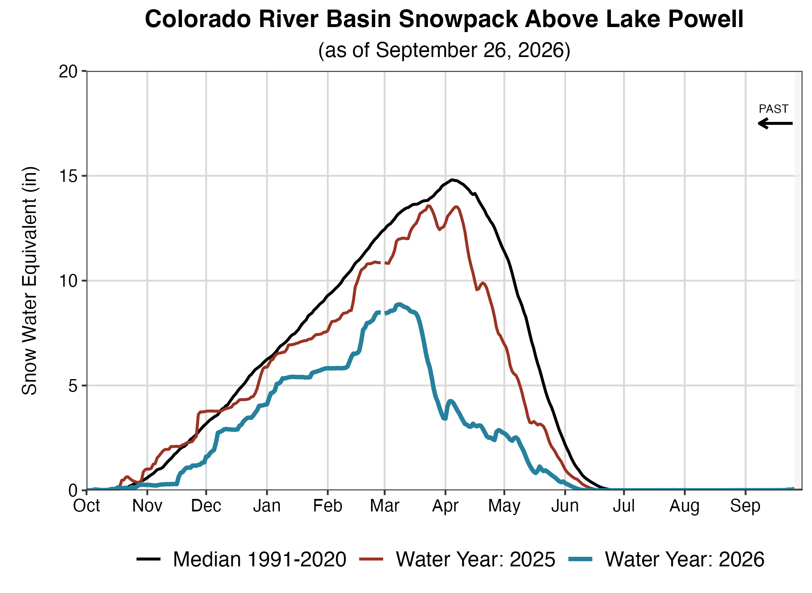
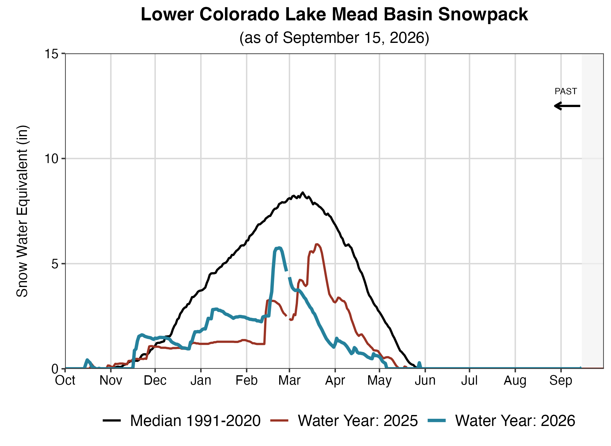
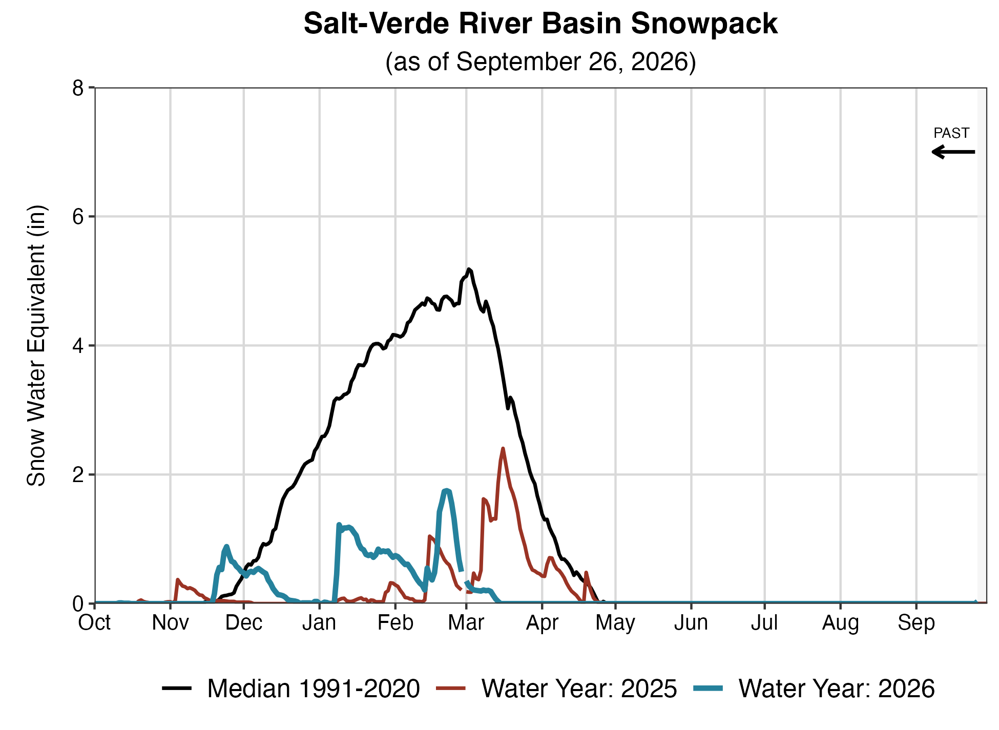
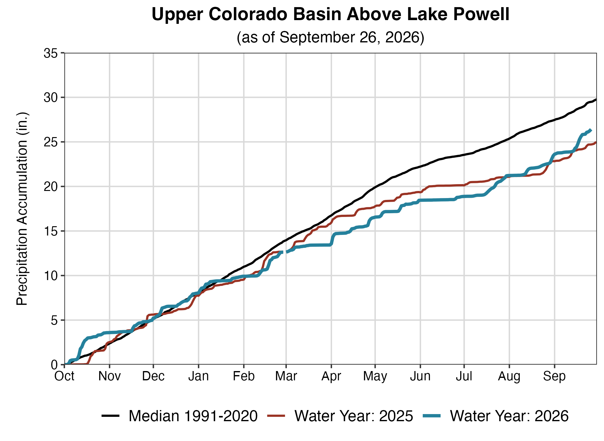
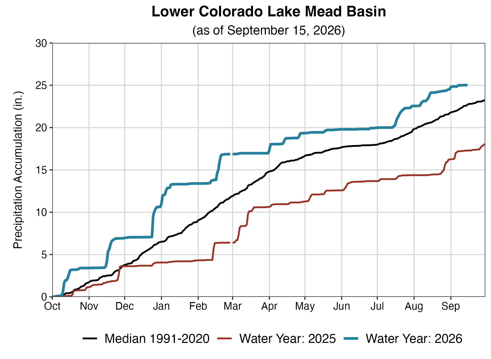
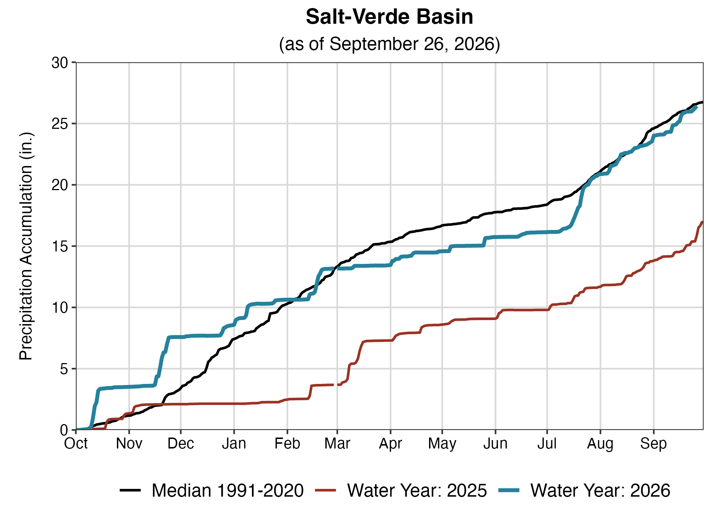

Upper Colorado River Basin







1 Percent of normal precipitation is based on an arithmetic mean, or average; percent of normal snowpack is based on the median value for a given date. Water Year statistics are based on the 30-year period from 1991-2020.